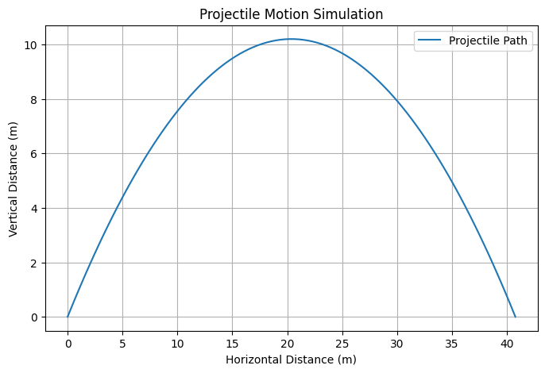

Problem 1
1. Theoretical Foundation
To derive the governing equations of motion for projectile motion, we will first break the motion into two components: horizontal and vertical. The equations governing these components arise from Newton's second law of motion.
Horizontal Motion:
Since there is no acceleration in the horizontal direction (neglecting air resistance), the horizontal velocity remains constant:
where: - \( v_0 \) is the initial velocity, - \( \theta \) is the angle of projection.
The horizontal displacement \( x(t) \) is given by the equation:
Vertical Motion:
The vertical motion is influenced by gravity, with the acceleration due to gravity acting downward. The vertical velocity at time \( t \) is:
where: - \( g \) is the acceleration due to gravity.
The vertical displacement \( y(t) \) is given by:
where the term \( \frac{1}{2} g t^2 \) represents the effect of gravity.
2. Analysis of the Range
The range of the projectile is defined as the horizontal distance it travels before it hits the ground. To find this range, we need to solve for the time of flight \( t_{\text{f}} \) when \( y(t) = 0 \) (the projectile hits the ground).
Setting \( y(t_{\text{f}}) = 0 \):
This is a quadratic equation in \( t_{\text{f}} \). Solving for \( t_{\text{f}} \), we get:
This is the time it takes for the projectile to hit the ground.
Now, we substitute \( t_{\text{f}} \) into the equation for horizontal displacement to find the range \( R \):
Simplifying:
This is the general equation for the range of a projectile. It shows that the range depends on: - The initial velocity \( v_0 \), - The launch angle \( \theta \), - The acceleration due to gravity \( g \).
3. Practical Applications
In real-world scenarios, this model can be extended to account for factors such as: - Air resistance: In reality, air resistance significantly affects the motion of the projectile, especially for objects with large surface areas or at high speeds. The range can be reduced due to drag forces. - Uneven terrain: If the projectile is launched from or lands on uneven terrain (e.g., a hill), the range calculation will need to consider the change in launch and landing elevations. - Launching angles: For different types of projectiles (e.g., rockets), the optimal launch angle may vary depending on factors like aerodynamics and fuel efficiency.
4. Implementation
To simulate projectile motion and visualize the range as a function of the launch angle, we can write a Python script to calculate the range for different launch angles.
